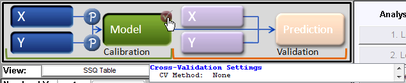
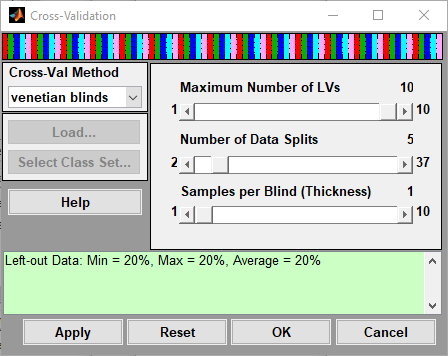

Table of Contents | Previous | Next
Cross-Validation Tool
You use the Cross-Validation tool to:
- Assess the optimal complexity of a model (for example, the number of principal components in a PCA or PCR model, or the number of latent variables in a PLS model).
|
- Estimate the expected performance of a model when you apply the model to unknown data.
|
For a given set of data, cross-validation involves a series of steps called subvalidation steps in which you remove a subset of objects from a set of data (the test set), build of a model using the remaining objects in the set of data (the model building set), and then apply the resulting model to the removed objects. You note how the errors accumulate as you leave out samples to determine the number of principal components/latent variables/factors to retain in the model. Cross-validation typically involves more than one subvalidation step, each of which in turn involves the selection of different subsets of samples for model building and model testing. In Solo, five different cross-validation methods are available, and these methods vary with respect to how the different sample subsets are selected for these subvalidation steps.
| 1.
|
To open the Cross-Validation tool, do one of the following:
|
- On the Analysis window, click Tools > Cross-Validation.
|
- Click the Cross-Validation icon in the Analysis window.
Note: You must load data into the Analysis window before the Cross-Validation icon is available.
|
- Cross-validation icon in the Analysis window
- 
- In the Analysis window Flowchart pane, click Choose Cross-Validation.
|
| 2.
|
In the Cross-Validation dialog box, select the method of cross-validation that you want to use. You will notice a visual representation of the splits at the top of the window. Other relevant information and warnings will appear at the bottom of the window.
|
- Cross-Validation dialog box
- 
| 3.
|
Use the slider bars to change the default values for the available parameters.
|
- Note: Not all parameters are relevant for all cross-validation methods. The initial values that are specified for the available parameters are default values that are based on the dimensionality of the data. You can click Reset at any time to reset the parameters to their default settings. See the Using_Cross-Validation page for details on how to use the different methods and settings.
| 4.
|
Do one of the following:
|
- Click Apply button to apply these settings and keep the Cross Validation dialog box open.
|
- Click OK to apply these settings and close the Cross Validation dialog box.
|
Technical Details
More technical details can be found on the Using_Cross-Validation page.